Identidad visual para un restaurante contemporáneo mexicano en Oaxaca. Una marca que reinterpreta la relación entre origen, materia, fuego y memoria desde una perspectiva sofisticada y contemporánea.
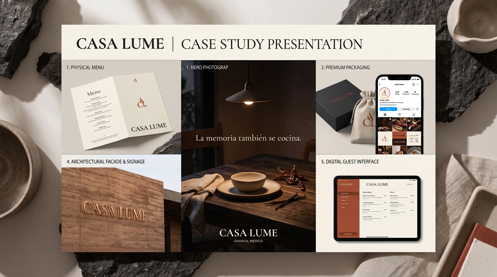
Casa Lume nace como un proyecto conceptual desarrollado para explorar cómo un restaurante contemporáneo puede conectar la riqueza cultural de México con una expresión visual sofisticada y actual.
La propuesta parte de una idea central: la memoria también se cocina.
A partir de ella, la identidad explora conceptos como tierra, fuego, materia, tiempo y origen para construir una experiencia de marca cálida, íntima y sensorial.
El resultado busca sentirse antiguo en su alma, pero contemporáneo en su expresión.
Casa Lume parte de una relación entre memoria y gastronomía.
Los sabores, materiales, aromas y técnicas pueden convertirse en recuerdos. La cocina no solamente transforma ingredientes: también transforma experiencias.
La identidad toma esta idea y la convierte en un lenguaje visual basado en tres pilares:
La tierra representa el origen y la materia. El fuego representa transformación y tiempo. La memoria representa aquello que permanece después de la experiencia.
La tierra da origen.
El fuego transforma.
La memoria permanece.
La dirección creativa busca construir una marca que tenga profundidad cultural sin recurrir a representaciones literales de México.
La inspiración nace de la materia: piedra volcánica, tierra, cerámica, madera, superficies quemadas, textiles, humo y luz.
Estos elementos se transforman en una estética contemporánea donde lo artesanal convive con una composición editorial precisa.
El objetivo no es representar Oaxaca literalmente, sino transmitir su sensibilidad a través de la materia, la luz y la experiencia.
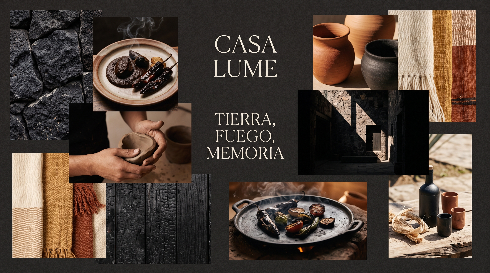
La identidad visual de Casa Lume combina formas orgánicas, estructuras editoriales, texturas y una paleta inspirada en materiales naturales.
El sistema busca equilibrar diferentes contrastes: artesanal + sofisticado, orgánico + estructurado, cálido + elegante, tradicional + contemporáneo.
Cada recurso visual forma parte de un mismo lenguaje y permite que la identidad evolucione sin perder reconocimiento.
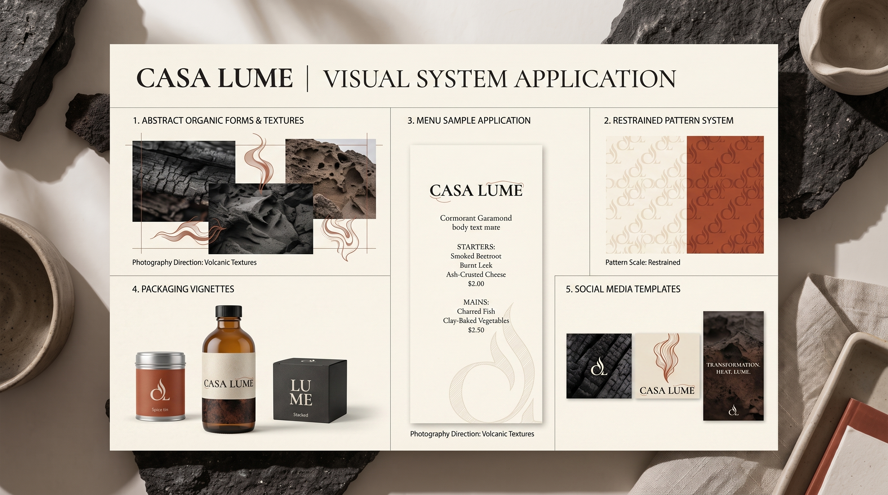
El logotipo coloca a LUME como elemento principal de la identidad, mientras que CASA funciona como descriptor secundario.
La construcción tipográfica parte de una estética editorial de alto contraste, inspirada en la elegancia de Cormorant Garamond.
Una intervención extremadamente sutil en las formas de las letras introduce una sensación de movimiento, calor y transformación. La referencia al fuego no es literal: se encuentra en la forma, en el movimiento y en la tensión de las letras.
El isotipo nace directamente de esta misma intervención tipográfica para mantener una relación formal entre símbolo y logotipo.
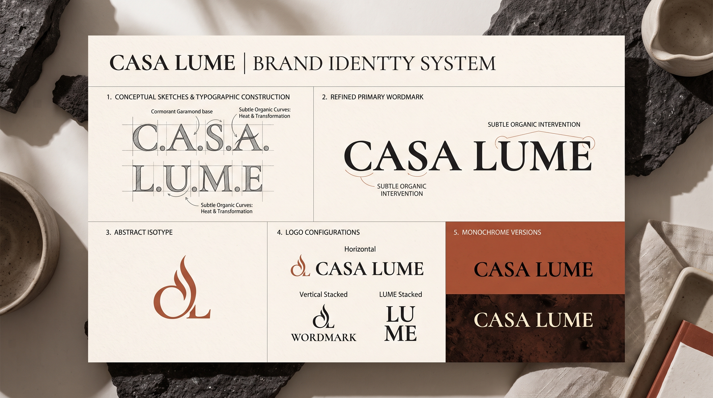
El desarrollo comenzó explorando diferentes formas de expresar memoria, movimiento, calor y transformación dentro de una estructura tipográfica.
Las primeras propuestas buscaron evitar cualquier representación literal del fuego y encontrar una solución más abstracta y atemporal.
La exploración evolucionó hacia una intervención mínima en la propia tipografía, creando un gesto distintivo capaz de convertirse también en símbolo.
El resultado mantiene una apariencia elegante y editorial, pero incorpora un detalle propio que permite reconocer la identidad de Casa Lume.
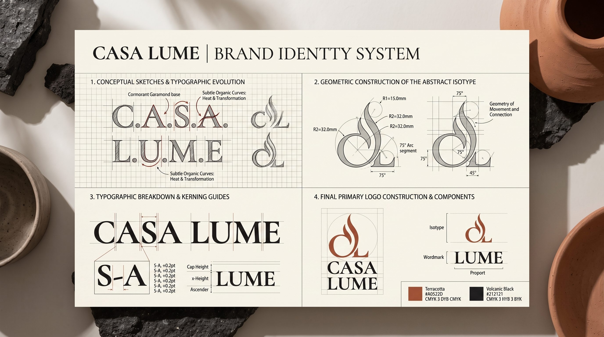
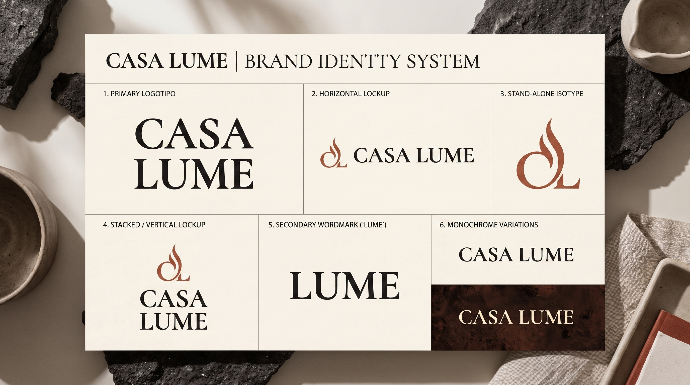
El lenguaje cromático de Casa Lume busca transmitir profundidad, calidez y sofisticación.
Los tonos oscuros aportan carácter y recuerdan la piedra volcánica y las superficies quemadas. Los tonos claros introducen contraste y espacio. Los tonos terracota conectan la identidad con la tierra y la materia.
Entradas · Platos · Postres · Bebidas
El sistema gráfico nace de conceptos como humo, movimiento, materia, tiempo y transformación.
Las formas orgánicas aportan fluidez mientras que las estructuras editoriales aportan orden.
Líneas, texturas, marcos y composiciones pueden combinarse de diferentes maneras para generar piezas únicas sin perder coherencia. El sistema está diseñado para evolucionar, no para depender de una única composición.
La fotografía de Casa Lume busca transmitir más que la apariencia de un plato.
Texturas, ingredientes, materiales, manos, fuego, arquitectura y momentos de servicio construyen una narrativa sensorial.
La iluminación es cinematográfica, cálida e íntima, con sombras profundas y una sensación de naturalidad controlada. La fotografía debe hacer que el visitante pueda imaginar la temperatura, textura y atmósfera del restaurante.
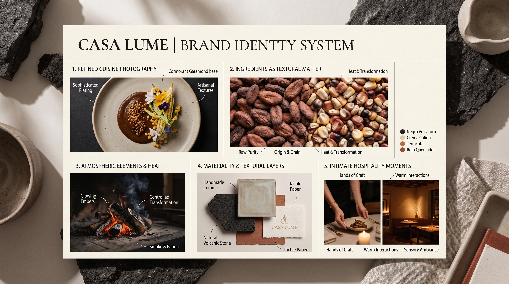
El menú convierte la identidad visual en una experiencia física.
La combinación de papel texturizado, tipografía editorial y una composición limpia crea una pieza que pertenece al universo del restaurante.
La información se organiza con claridad, permitiendo que la identidad tenga presencia sin interferir con la lectura.
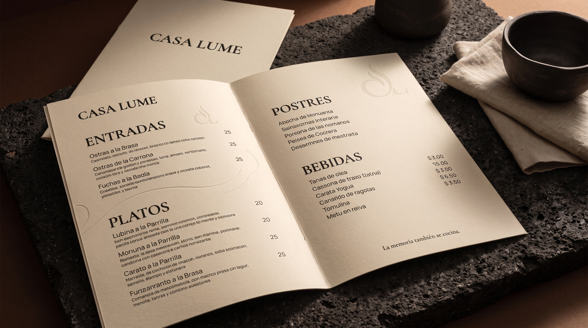
El sistema de packaging extiende la identidad de Casa Lume hacia diferentes puntos de contacto.
Cajas, bolsas, envoltorios, recipientes y etiquetas utilizan los mismos principios gráficos, tipográficos y materiales de la marca.
La aplicación busca mantener una sensación artesanal y sofisticada sin recurrir a acabados excesivamente ornamentales.
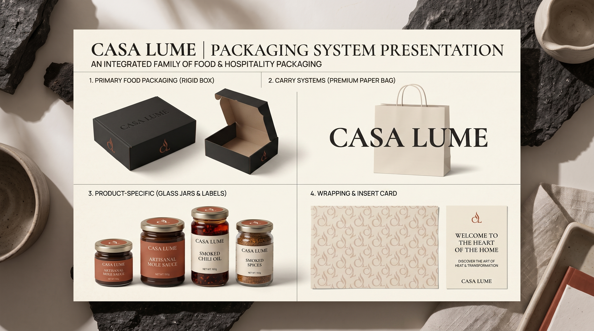
La experiencia de Casa Lume se construye también a través de los objetos que rodean la mesa.
Cerámica, textiles, papel, piedra, madera y pequeños elementos de hospitalidad crean una atmósfera coherente con la identidad.
La marca aparece de manera contenida, permitiendo que los materiales y la experiencia gastronómica sean protagonistas.
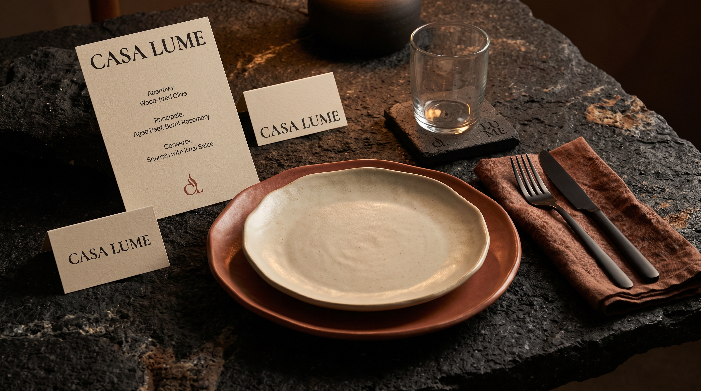
La identidad no se coloca sobre la experiencia.
Se convierte en parte de ella.
Casa Lume lleva su lenguaje visual a la arquitectura mediante materiales, iluminación, señalización y proporciones.
Piedra volcánica, madera oscura, yeso cálido, cerámica artesanal y superficies mate construyen un espacio íntimo y contemporáneo.
La conexión con Oaxaca aparece a través de la materia y la sensibilidad del espacio, no mediante elementos decorativos literales.
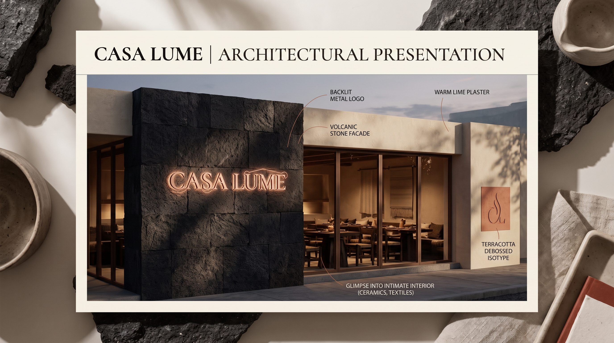
La identidad deja de ser gráfica y empieza a sentirse.
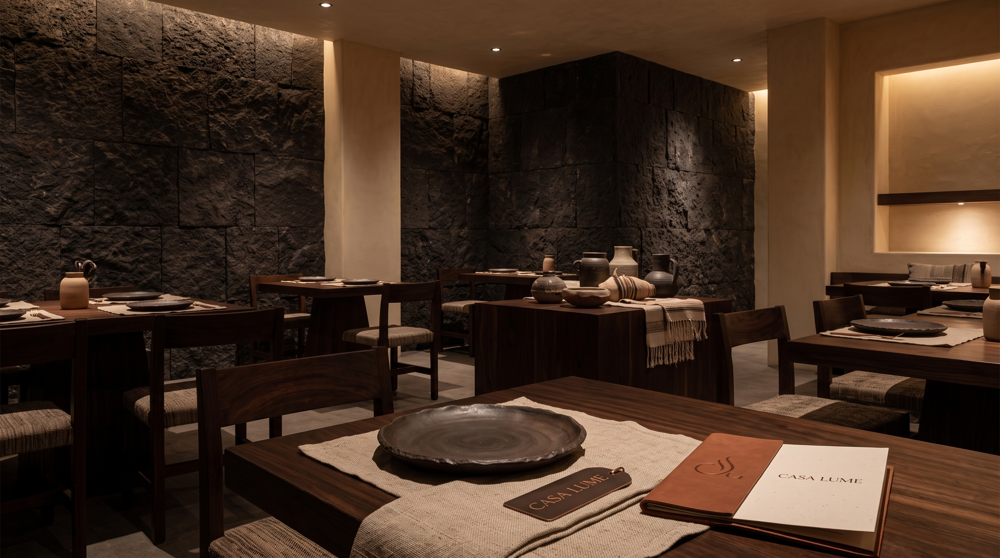
El sistema visual se adapta al entorno digital manteniendo la misma personalidad de la marca.
La tipografía, fotografía, composición y lenguaje gráfico crean una experiencia digital coherente con el espacio físico. La interfaz evita tendencias excesivamente tecnológicas y prioriza una navegación elegante, clara y sensorial.
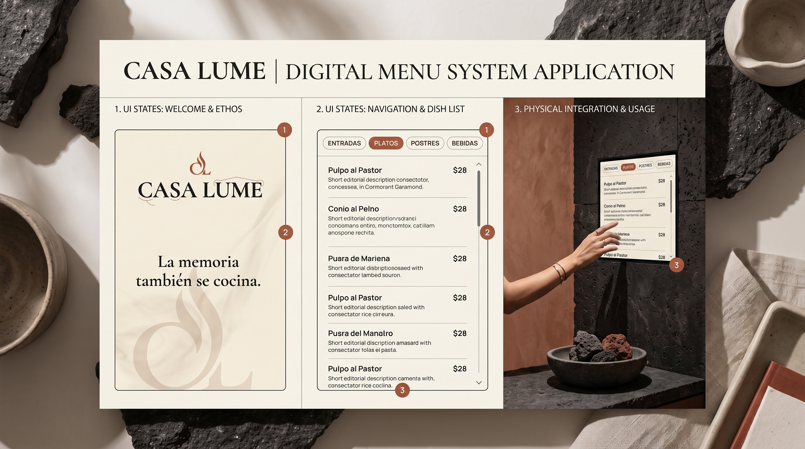
Las redes sociales extienden la experiencia de Casa Lume mediante una combinación de gastronomía, fotografía, arquitectura, materiales y narrativa editorial.
El sistema mantiene una estructura reconocible sin convertir cada publicación en una plantilla repetitiva. Las imágenes y los mensajes trabajan juntos para construir deseo, identidad y reconocimiento.
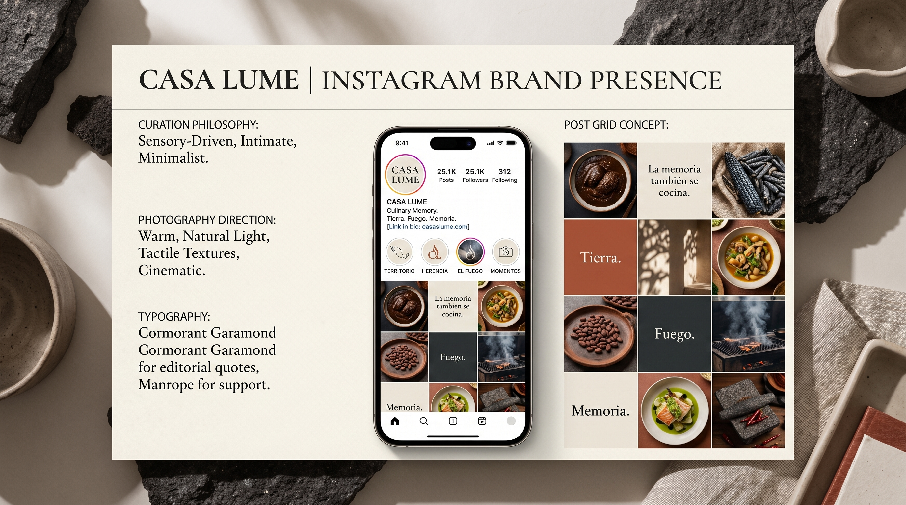
La campaña traduce el concepto de Casa Lume en una comunicación más emocional.
La idea conecta el paso del tiempo con la transformación de los ingredientes, las técnicas y los recuerdos que construye una experiencia gastronómica.
La campaña mantiene el mismo lenguaje fotográfico, tipográfico y cromático de la identidad para crear una comunicación reconocible en diferentes formatos.
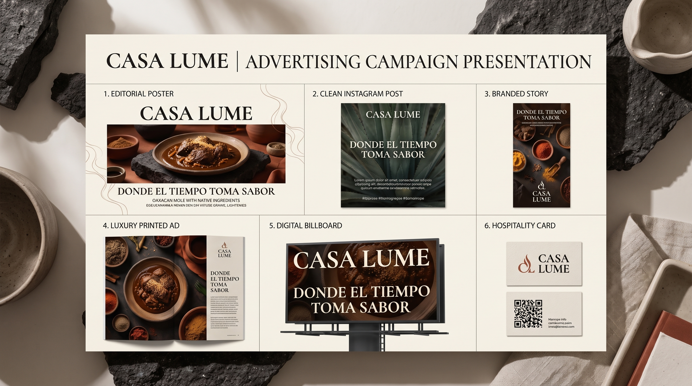
Desde el logotipo hasta el menú, desde los materiales de mesa hasta el espacio físico y la experiencia digital, Casa Lume fue desarrollado como un sistema de identidad completo.
Cada punto de contacto parte de los mismos principios para construir una experiencia coherente, sofisticada y reconocible.
La identidad no busca representar literalmente una cultura o un territorio. Busca transmitir una sensación: origen, materia, transformación y memoria.
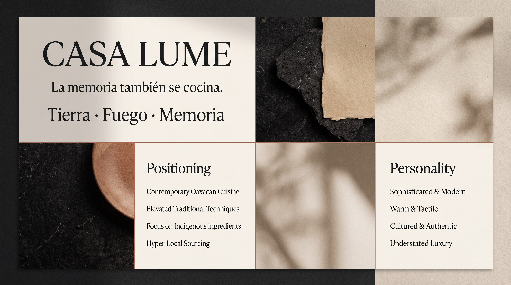
Casa Lume transforma la relación entre cocina, memoria y materia en una identidad contemporánea para un restaurante mexicano de alta gama.
El resultado es una marca cálida, sofisticada y sensorial, capaz de funcionar en diferentes contextos sin perder su esencia.
Desde una pieza editorial hasta una experiencia de mesa, desde el packaging hasta el espacio físico, cada aplicación forma parte de un mismo universo.
Casa Lume no representa una tradición. La reinterpreta.
Una identidad no debería limitarse a verse bien. Debe tener una idea, construir un sistema y crear una experiencia que las personas puedan reconocer y recordar.